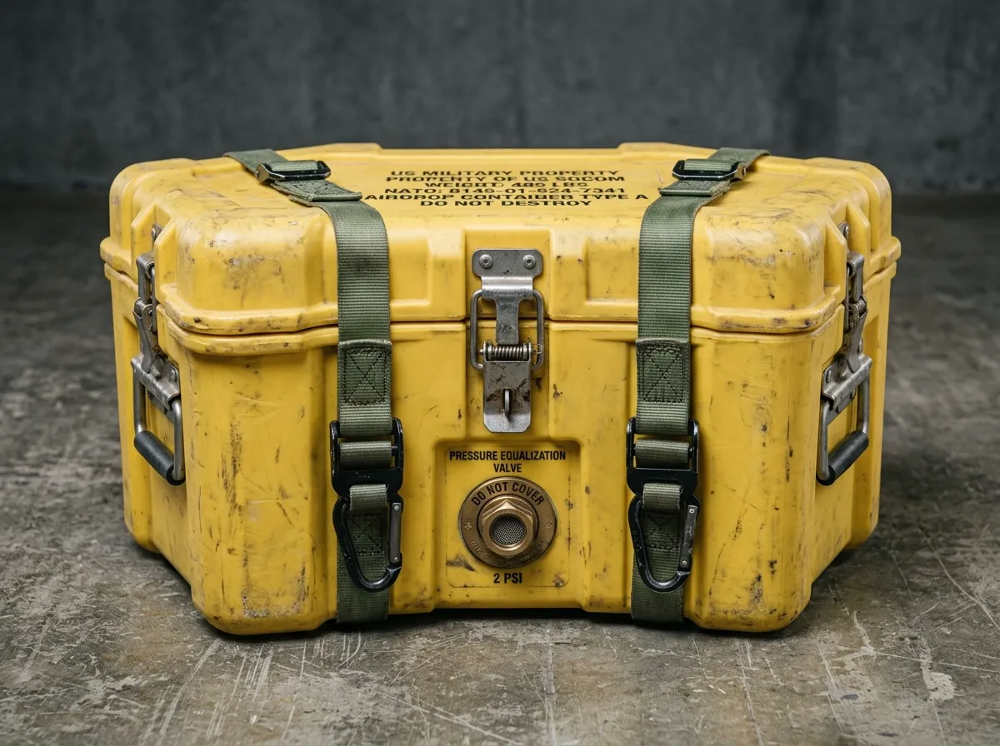
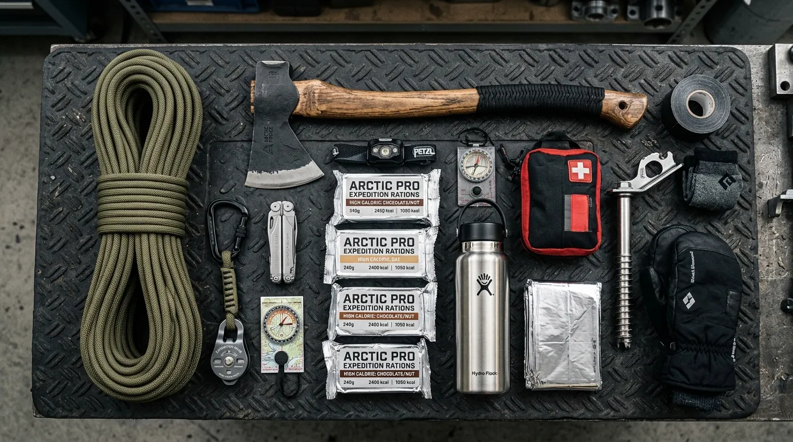
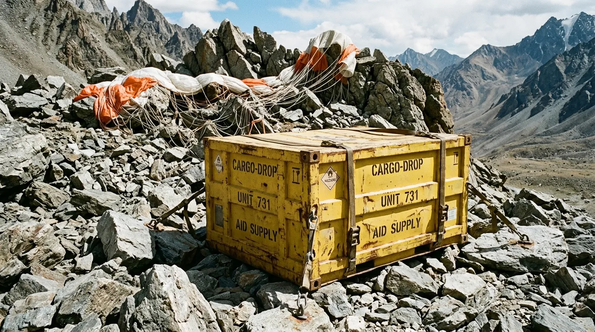
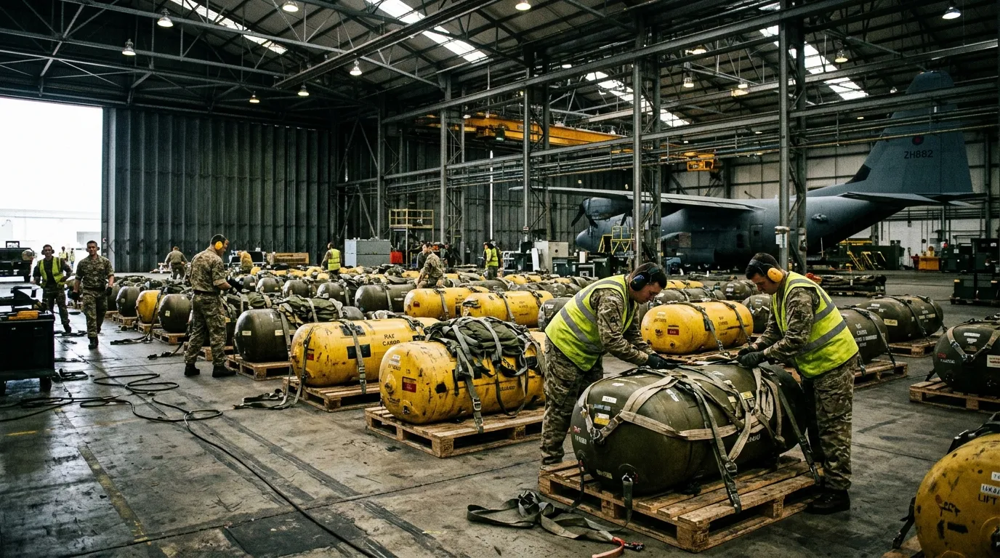

Expedition Hardware Delivered by Tactical Parachute.
Submit Drop RequisitionThe Pod Specifications & Drop Physics

Every order departs our Norfolk staging apron inside a roto-molded high-density polyethylene drop pod with two-inch closed-cell neoprene gaskets and dual shear-pin latches. The interior chamber is purged with dry nitrogen gas to prevent condensation, oxidation, and fungal spore formation during extreme sub-zero descents. A calibrated barometric relief valve prevents vacuum lock during low-altitude parachute deployment, while a crushable aluminum honeycomb base absorbs sixty gravities of vertical deceleration upon gravel contact.
Prior to sealing, each Drop Pod is subjected to a triple-stage atmospheric evacuation cycle, drawing the internal chamber down to near-vacuum before backfilling with 99.9% pure, medical-grade nitrogen gas. This rigorous displacement protocol absolutely guarantees zero internal condensation regardless of the thermal shock experienced when transitioning from a heated cargo hold into a minus-forty-degree arctic slipstream. Your cold-forged tools arrive surgically dry, unconditionally devoid of microscopic surface oxidation or moisture damage.
We do not stock cardboard. We do not dispatch partial shipments. Whether your requisition comprises three kilograms of cold-forged Swedish steel wedges or a forty-kilogram winter shelter system, the cargo is secured with military-grade ratchet webbing that will not shift under terminal drag. Cut the serialized tamper wire with your pliers, release the cam levers, and inspect uncompromised dry steel.
Tactical Payload Requisitions

All crates ship pre-rigged with 36-inch cross-type deceleration parachutes and quick-release harness shackles. The internal suspension matrix isolates heavy striking implements from fragile optical or combustion elements. A custom-machined load-bearing armature ensures zero internal load shifting, maintaining perfect centre-of-mass balance during the volatile parachute deployment sequence and turbulent descent envelope.
Payload Alpha: Arctic Incursion
1095 carbon steel adze, 100m Vectran cordage, 12 pemmican ration bricks, graphite bivouac shelter, magnesium fire rods.
Payload Bravo: Coastal Salvage
Pneumatic diving pry-bar, titanium rigging shackles, high-pressure bilge pump, vulcanized drysuit patches, maritime signal distress smoke.
Payload Charlie: Alpine Traverse
Forged chromoly crampons, ice pitons, deadman anchors, bivouac stove, sub-zero down quilt.
Aerial Extraction Parameters
EXTRACTION
Ground signal protocols: orange panel markers, smoke canister azimuth alignment, or strobe beacons for nocturnal drops. Cargo deployment requires disciplined LZ preparation; gravity is unforgiving.
Field Despatches // Terminal Impact Logs

Greenland Icecap
Pod landed on blue ice after 40-knot drift; zero internal shift; adze and stove operational immediately. Total deceleration event recorded at 52 Gs, honeycomb crush zone fully absorbed the impact.
Outer Hebrides
Pod dropped into sea spray boulder field; gaskets held 100% dry; rations dry. The high-density polyethylene hull sustained severe external gouging but maintained absolute atmospheric integrity.
Cairngorms Plateau
High-velocity scree strike; aluminum honeycomb base crushed as designed; precision tools undamaged. Parachute canopy detached automatically upon impact to prevent wind-drag tumbling down the slope.
Staging Apron Requisition Form

Verify your drop zone coordinates; airdrops cannot be recalled once the release pin is pulled. Standard airdrop missions staged within 24 hours of payload verification.